Jen Richmond
home
about
blog
30daycharts
Email
Categories
All
(20)
30daycharts
Want to support my chart making?
day 0 challenge
I have some time on my hands at the moment and thought the #30DayChartChallenge might be a good way to refresh my ggplot skills.
Mar 31, 2025
Jen Richmond
day 1 fractions
This plot from Our World in Data illustrates the proportion of people who are willing to donate 1% of their income to climate change efforts as a function of people’s…
Apr 1, 2025
Jen Richmond
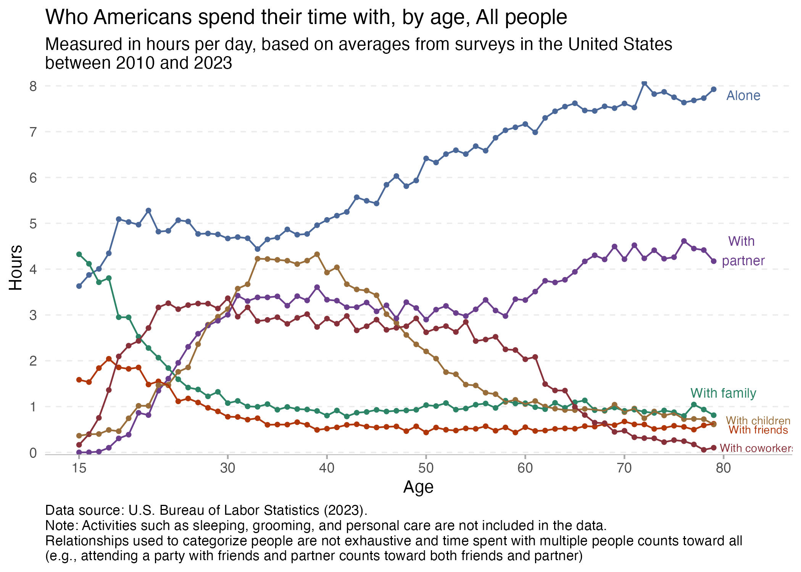
day 2 slope
This plot from Our World in Data illustrates the amount of time that we spend with others and how that changes with age. The slope of line plotting the amount of time that…
Apr 2, 2025
Jen Richmond
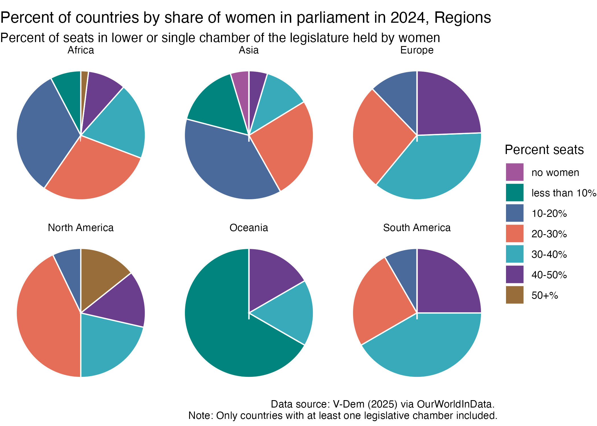
day 3 circular
This plot illustrates changing representation of women in government leadership. It is great that in 2024 fewer than 2% of governments have no women in leadership, but it is…
Apr 3, 2025
Jen Richmond
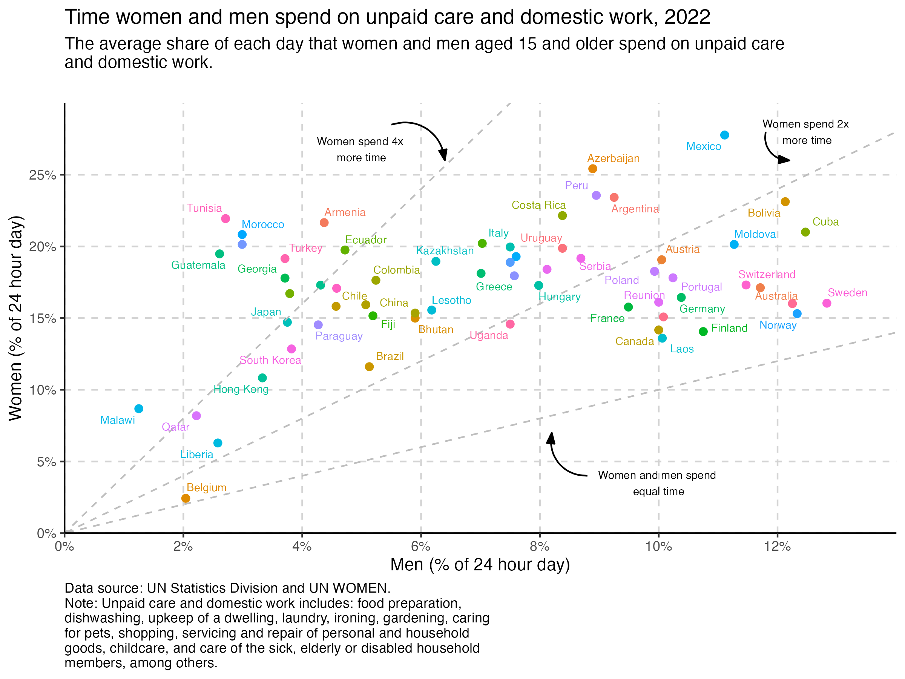
day 4 big small
This plot illustrates the disproportionate amount of time that women across the world spend doing unpaid care and domestic work relative to men. Only Belgium comes anywhere…
Apr 4, 2025
Jen Richmond
day 5 ranking
These plots from Our World in Data caught my eye this week given all that is going on in the USA with layoffs and funding cuts (R&Dspending ; R&Dresearchers).
Apr 5, 2025
Jen Richmond
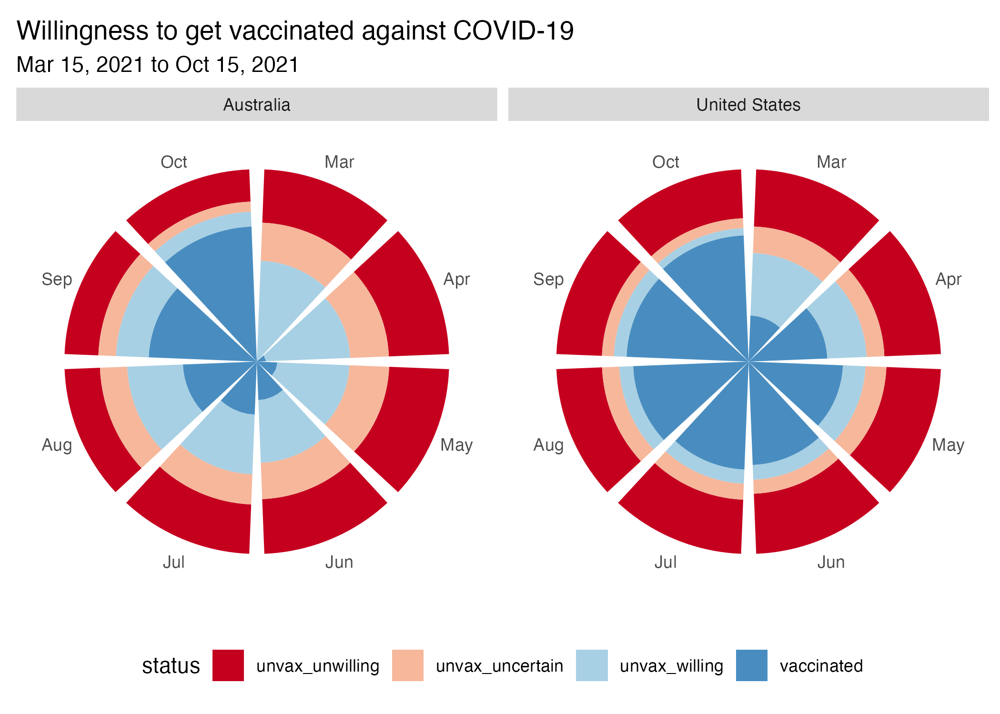
day 6 florence
I did not know that Florence Nightingale was also a data visualisation revolutionary, in addition to being a nurse and scientist. She realised that visualisations are…
Apr 6, 2025
Jen Richmond
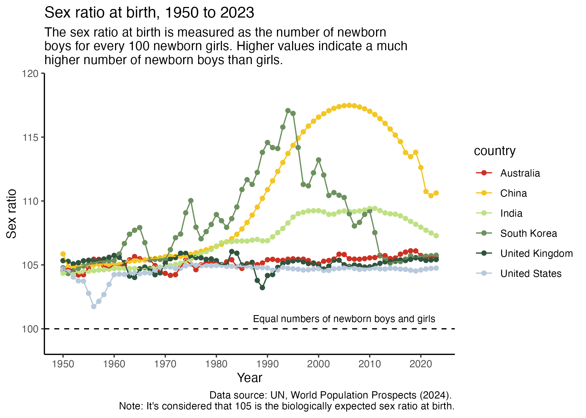
day 7 outliers
The plots at Our World in Data unpacking changes in sex ratio at birth across the world uncover some interesting outliers. Across the world it is typical for there to be…
Apr 7, 2025
Jen Richmond
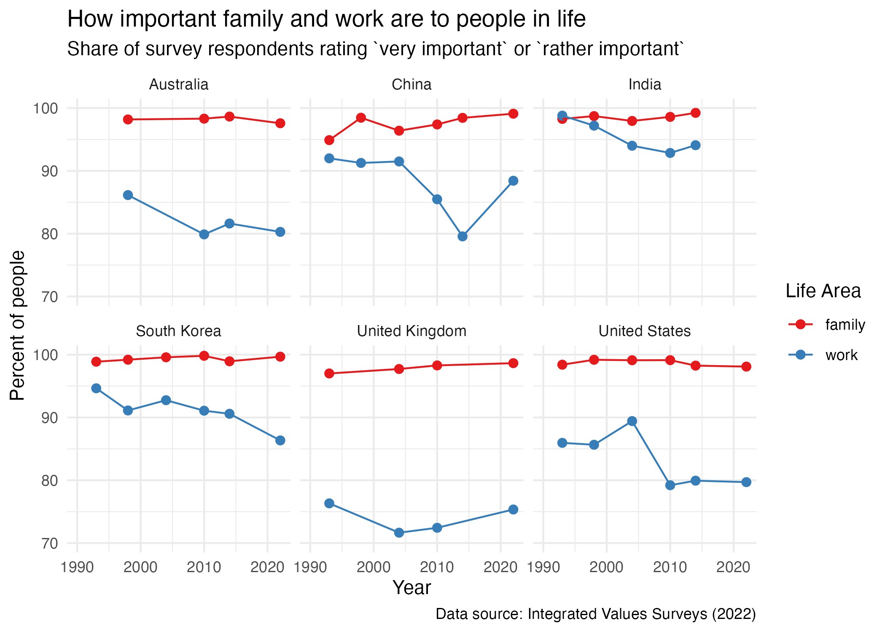
day 9_diverging
Our World in Data has a series of plots that report data from the Integrated Values survey, asking people across the world how important they consider a range of life areas…
Apr 9, 2025
Jen Richmond
day 11_stripes
Departing from Our World in Data today to try and make a “show your stripes” temperature plot.
Apr 11, 2025
Jen Richmond
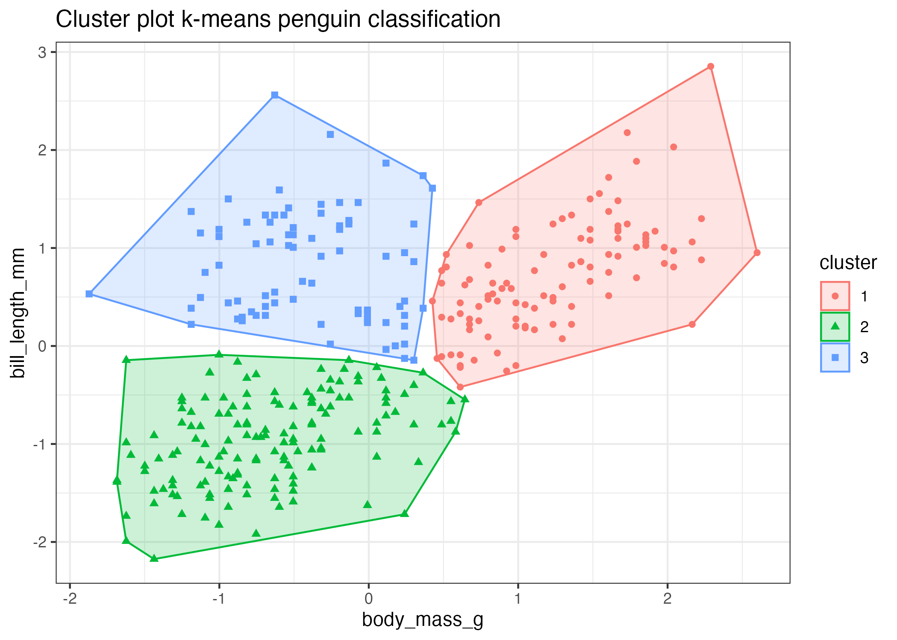
day 13_clusters
Today I am again departing from Our World in Data to play around with something I know nothing about: k-means clustering. This animation by Allison Horst from the
tidymodels
…
Apr 13, 2025
Jen Richmond
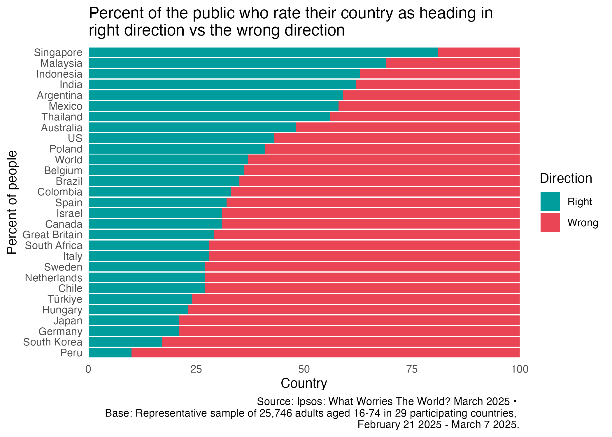
day 16_negative
Exploring OurWorldinData this morning looking for plots that might fit the negative theme for today and this article caught my eye.
Apr 16, 2025
Jen Richmond
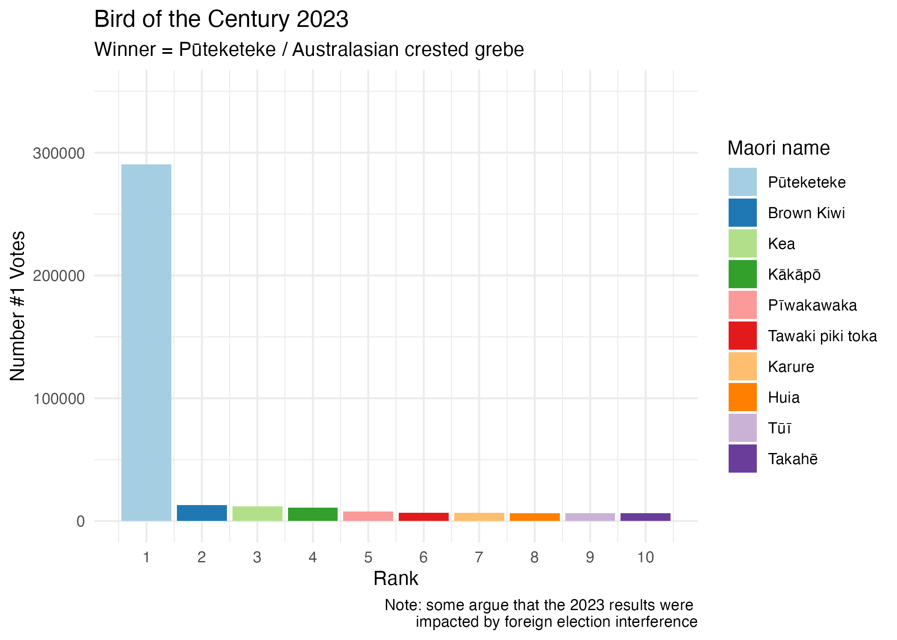
day 17_birds
It is Day 17 and the theme is birds. I am interested in the results of the Forest and Bird New Zealand Bird of the Year competition over the past few years.
Apr 17, 2025
Jen Richmond
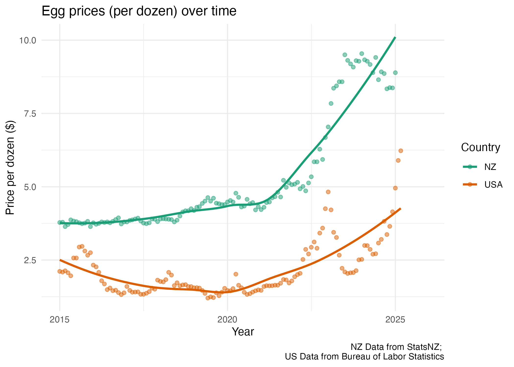
day 19_smooth
Egg prices in the USA are high right now, mostly due to supply issues caused by bird flu outbreaks. I was interested in how prices compare to egg prices in NZ, which have…
Apr 19, 2025
Jen Richmond
day 22 stars
Day 22 and the prompt is stars. Here I am looking at the age differences between love interests in Hollywood movies. Data found on Kaggle and downloaded from https://hollywoo…
Apr 22, 2025
Jen Richmond
day 24 WHO
The prompt for Day 24 is the World Health Organisation. I spent some time exploring the WHO website for a chart that uses a geom that I hadn’t tried before and came up with…
Apr 24, 2025
Jen Richmond
day 25 measles risk
For the Day 25 prompt risk, I am going to try my hand at maps and reproduce the CDC plots relating to measles vaccination and cases in the US.
Apr 25, 2025
Jen Richmond
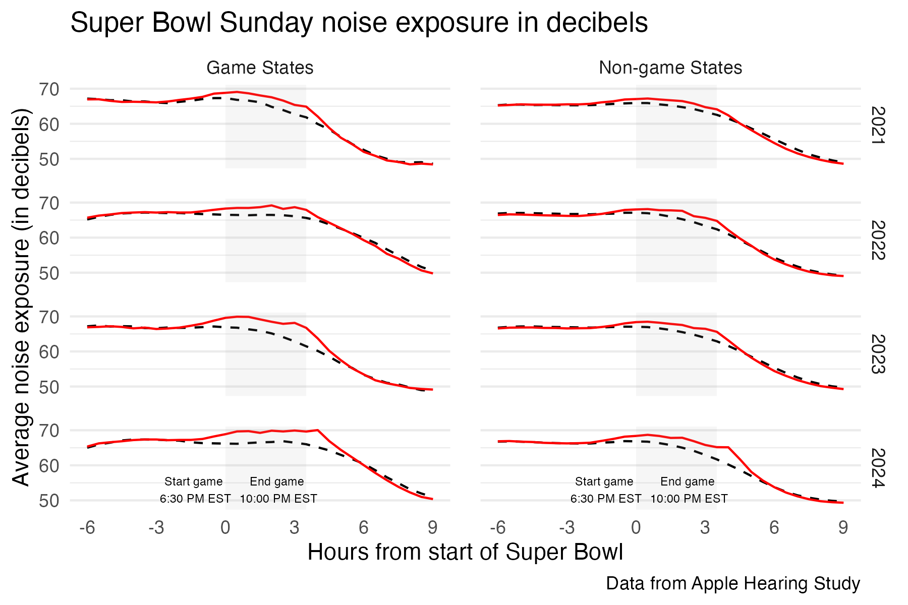
day 27 noise
The Day 27 prompt is noise and I am interested in finding some data illustrating how noise pollution might impact our health. It was a bit hard to find interesting plots…
Apr 27, 2025
Jen Richmond
day 28 inclusion
Stats NZ recently released an update to their Wellbeing 2023 dataset that included variables related to digital inclusion. I downloaded the raw dataset from the site and used …
Apr 28, 2025
Jen Richmond
day 30 finale
The last day of the #30DayChartChallenge- woot! As predicted I did not manage to make a chart every day; the latter half of the challenge clashed with school holidays and a…
Apr 30, 2025
Jen Richmond
No matching items